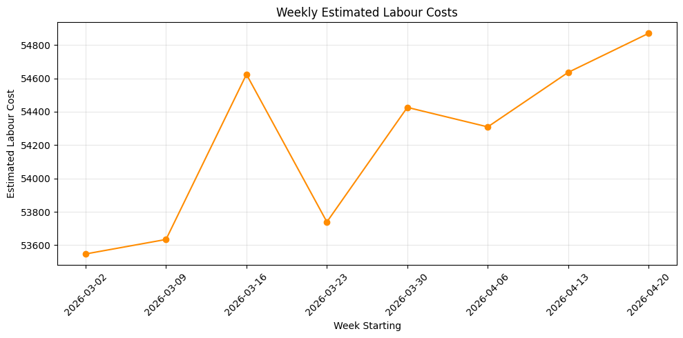
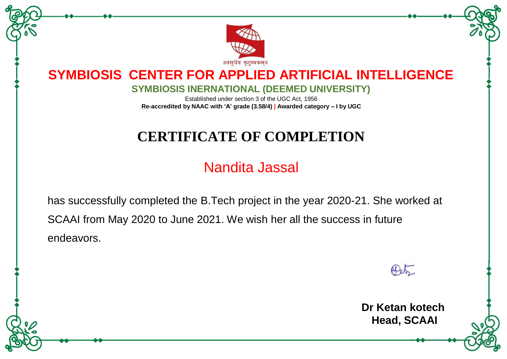

Job market analysis
What do current job postings show about demand, skills and trends? SQL to shape the data, Tableau to explore it.
I also lead end-to-end client implementations for large retail and logistics clients, from requirements and data extraction through QA workflows, UAT and stakeholder training.
What do current job postings show about demand, skills and trends? SQL to shape the data, Tableau to explore it.

Estimates labour cost from timesheet data and shows where the hours and money go.
Compares manual and automated process costs to show whether an automation is worth building and how fast it pays back.

Gyansetu, Aranya Consulting, September 2021
Six-month course completed at the Gurgaon centre, March to August 2021.

Symbiosis Centre for Applied Artificial Intelligence, 2020 to 2021
Completed my AI internship at the research centre from May 2020 to June 2021.
Anthropic
Introductory course on using Claude effectively for everyday work.
I started as a database developer in Mumbai, building healthcare dashboards on large datasets, then moved into IT support in Auckland before stepping into my current analyst role. I hold a Bachelor of Computer Science from Symbiosis Institute of Technology, Pune. I enjoy the point where clean data, clear reporting and a bit of automation make a team’s day easier.